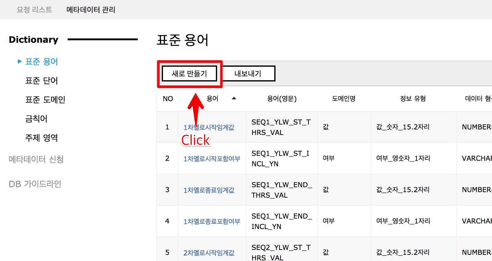
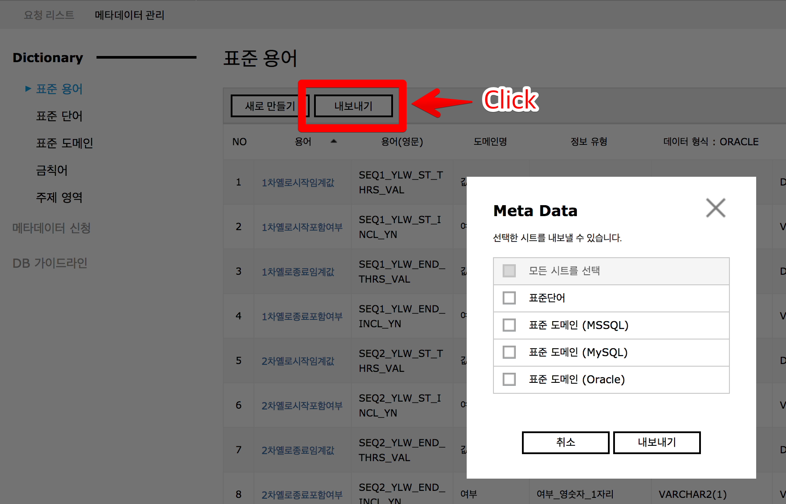
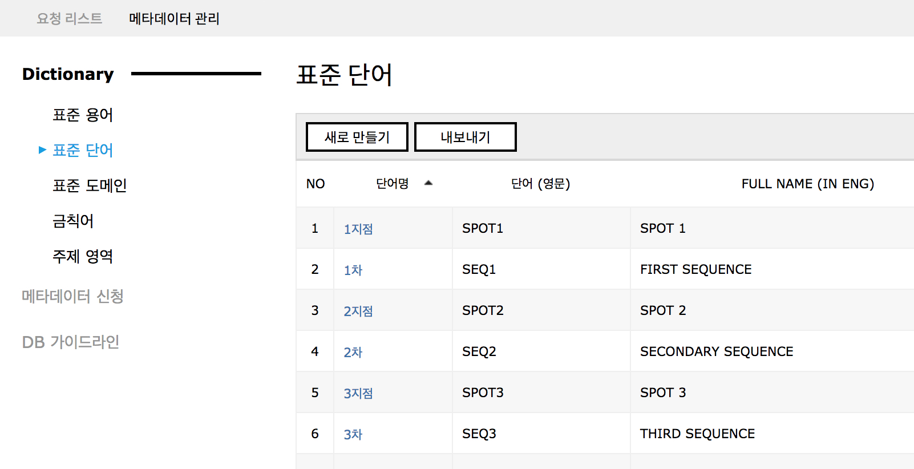
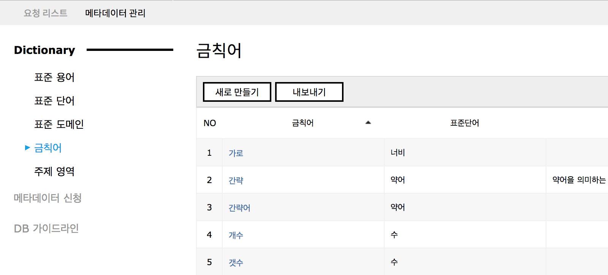
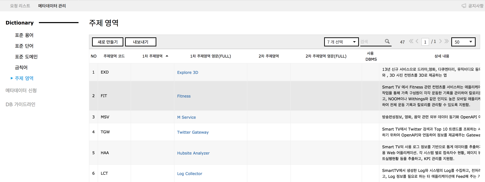
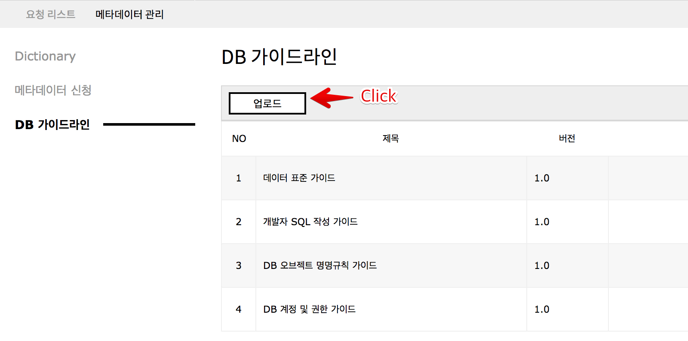
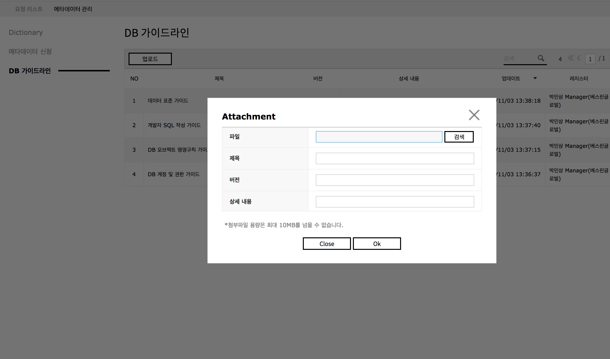
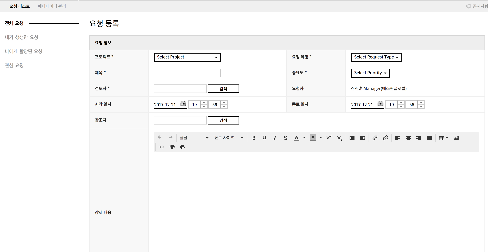
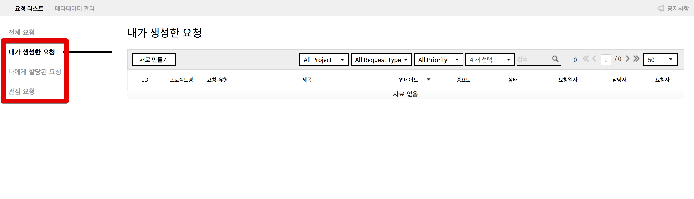

DBQCS
You can manage metadata you want to use as well as the quality when designing and modeling a database.
Managing DB Quality Assurance
Following is how to manage the DB metadata standard and how to improve quality and function with DBQCS Services.
Managing Metadata
1. Dictionary
Manages standard terminology, standard word, standard domain, banned word, subject area, etc.
You can make a request to change metadata with “Create New” button.





2. Request for Metadata
3. DB Guideline
i. Manages the manual that includes standard policy and design guidelines used within the organization.


Request List

